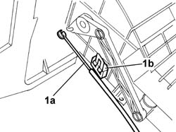
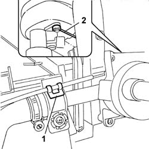
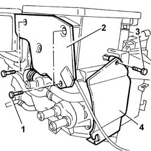
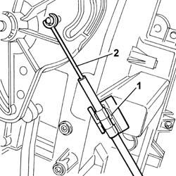

5040D49 AIR DISTRBUTION FLAP - AIR INTAKE/RECIRCULATION - TAP TRANSMISSION - R.R. WITH AIR CONDITIONING CASING REMOVED
- Path
- Procedures > 50 AUXILIARY UNITS > 5040 AIR CONDITIONING CASING AND COMPONENTS > 5040D AIR CONDITIONER CONTROLS > 5040D49 AIR DISTRBUTION FLAP - AIR INTAKE/RECIRCULATION - TAP TRANSMISSION - R.R. WITH AIR CONDITIONING CASING REMOVED
- Kind
- repair procedure (removal / refitting; the operation number is the code)
- Applies to
- all engines; all production periods
- Interactive page
- https://sloeber94.github.io/elrnDB-fDct/en/#/244001311
Applies to: all engines; all production periods
 Removing
Removing
 Refitting
Refitting- Follow the instructions below for the air recirculation flap control cable.
1. Release the control cable (1a) from the spring (1b) and disconnect it from the recirculation air intake.

Applies to: all engines; all production periods
- Follow the instructions below for the heater tap control cable.
1. Undo the retaining bolts.
2. Remove the rear guard.
3. Undo the retaining bolt.
4. Remove the side guard.
Applies to: all engines; all production periods
1. Release the control cable from the spring.
2. Disconnect the control cable and remove it.

Applies to: all engines; all production periods
- Follow the instructions below for the air distribution flap control cable.
1. Undo the retaining bolts.
2. Remove the rear guard.
3. Undo the retaining bolt.
4. Remove the side guard.

Applies to: all engines; all production periods
1. Release the control cable from the spring.
2. Disconnect the control cable and remove it.

Applies to: all engines; all production periods
Refitting
Removing- Follow the instructions below for the air recirculation flap control cable.
- Connect the control cable and secure it to the spring.
- Follow the instructions below for the heater tap control cable.
- Connect the control cable and secure it to the spring.
- Position the side guard and tighten the fixing bolt.
- Position the rear guard and tighten the fixing bolts.
- Follow the instructions below for the air distribution flap control cable.
- Connect the control cable and secure it to the spring.
- Position the side guard and tighten the fixing bolt.
- Position the rear guard and tighten the fixing bolts.